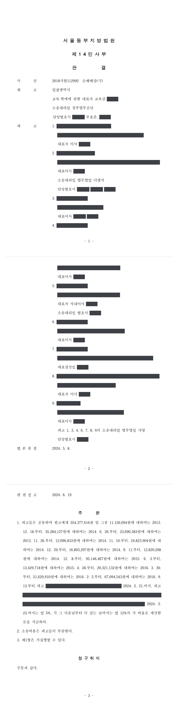

관급 PHC 파일 구매 입찰담합 손해배상 청구소송
서울동부지방법원 2018가합112992 · 담당변호사 부효준
판결문

사건의 요지
학교 신축공사 등에 쓰이는 관급 PHC 파일 구매 입찰 12건에서 콘크리트 파일 생산업체들과 그 협동조합이 낙찰예정사와 들러리사를 미리 정해 투찰하는 입찰담합을 한 데 대하여, 발주자인 광역지방자치단체(교육감)가 담합으로 부풀려진 구매대금 상당의 손해배상을 구한 사건입니다. 법원은 확정된 형사판결을 근거로 공동불법행위책임을 인정하고, 소멸시효는 공공조달기관의 통지로 담합 사실을 현실적으로 인식한 때부터 진행한다고 보았으며, 손해액은 관련 소송에서 채택된 중회귀분석 결과에 따라 최종 구매대금의 7.6245%로 산정하여 청구를 모두 받아들였습니다.
사건의 주요 내용
PHC 파일(고강도 콘크리트 파일)은 중소기업자간 경쟁제품으로 지정되어 공공기관이 발주하는 구매 입찰에 중소기업만 참여할 수 있었습니다. 파일 생산업체들의 협동조합은 2009년경부터 회원사들의 실무자협의회·대표자협의회를 주재하면서 관급 구매 입찰마다 낙찰예정사와 들러리사, 투찰금액을 정하고 나머지 회원사는 참여하지 않는 방식으로 입찰담합을 하였고, 때로는 무응찰·단독응찰·예정가격 초과응찰로 입찰을 유찰시켜 특정 회원사가 수의계약을 맺게 하였습니다.
원고 광역지방자치단체(교육감이 대표)는 2013년 11월부터 2015년 11월까지 학교 신축공사 등의 관급 PHC 파일 구매 입찰 12건에서 피고 회사들과 계약금액 합계 약 46억 원의 물품구매계약을 체결하였습니다. 피고들의 임원들은 입찰방해죄로 기소되어 2016년 9월 유죄판결을 받았고 그 판결은 2018년 10월 확정되었습니다. 원고는 2018년 8월 공공조달기관으로부터 담합 사실과 손해배상 검토를 안내하는 공문을 받고 2018년 11월 피고 조합과 회사 8곳을 상대로 이 소송을 제기하였으며, 부효준 변호사는 정부법무공단 소속으로 원고를 대리하였습니다.
쟁점
- 확정된 형사판결이 인정한 입찰담합 사실을 근거로 피고들의 공동불법행위책임을 인정할 수 있는지
- 발주자인 지방자치단체의 손해배상채권에 대한 3년 단기소멸시효가 언제부터 진행하는지
- 담합으로 인한 손해액을 어떤 방법으로 산정할 것인지
피고들의 주장
- 피고 조합과 회사 7곳은 원고의 손해배상채권이 불법행위를 원인으로 한 것이어서 민법 제766조의 3년 단기소멸시효가 적용되므로, 소 제기일부터 3년 전에 입찰이 이루어진 계약에 관한 채권은 시효로 소멸하였다고 주장하였습니다.
- 피고들은 담합과 손해의 인과관계 등에 관하여 확정된 형사판결의 사실인정과 다른 사정들을 주장하면서 손해배상책임을 다투었습니다.
부효준 변호사의 주장
- 확정된 형사판결에서 유죄로 인정된 사실은 민사재판에서도 유력한 증거이므로, 피고들이 공모하여 입찰을 방해한 행위는 구 독점규제 및 공정거래에 관한 법률이 금지하는 부당한 공동행위로서 원고에게 상당인과관계 있는 손해를 입혔다고 주장하였습니다.
- 소멸시효의 기산점인 '손해 및 가해자를 안 날'은 피해자가 불법행위의 요건사실을 현실적이고 구체적으로 인식한 때이므로, 물품 공급이 완료된 발주자로서는 공공조달기관의 공문을 받은 2018년 8월에야 담합 사실을 알 수 있었고 그로부터 3년 안에 소를 제기하였다고 반박하였습니다.
- 손해액은 실제 구매가격과 담합이 없었을 경우의 가상 경쟁가격의 차액이며, 관련 민사소송에서 여러 변수를 통제한 중회귀분석으로 산정된 손해율(최종 구매대금의 7.6245%)을 적용하여야 한다고 주장하였습니다.
법원의 판단
법원은 동일한 사실관계에 관하여 확정된 형사판결이 유죄로 인정한 사실은 특별한 사정이 없는 한 민사재판에서도 인정하여야 한다는 대법원 판례에 따라, 피고들이 공모하여 입찰방해의 범죄행위를 함으로써 구 공정거래법 제19조 제1항 제8호를 위반하였고 그로 인하여 원고가 상당인과관계 있는 손해를 입었다고 보아 피고들의 공동불법행위책임을 인정하였습니다.
소멸시효 항변에 관하여는, 원고가 공공조달기관으로부터 담합 사실과 손해배상 검토를 안내하는 공문을 받은 2018년 8월에야 비로소 불법행위의 요건사실을 현실적·구체적으로 인식할 수 있었고, 원고가 입찰한 계약은 전체 담합 건 가운데 소수여서 형사 1심 유죄판결만으로 이를 알 수 없었다고 보아, 그로부터 3년 안에 제기된 이 소송의 채권은 시효로 소멸하지 않았다고 판단하였습니다.
손해액에 관하여는 담합 기간과 비담합 기간의 호황·불황과 경쟁업체 수의 차이를 고려하지 않은 단순 전후비교 감정 결과는 믿기 어렵고, 그러한 변수를 통제한 중회귀분석 결과가 더 신빙성이 높다고 보아 계약별 최종 구매대금의 7.6245%를 손해액으로 산정하였습니다. 이에 따라 피고들이 공동하여 손해액 합계 354,377,616원과 각 계약일부터의 지연손해금을 지급하라고 명하고, 소송비용은 피고들이 부담하며 가집행할 수 있다고 하였습니다.
불법행위로 인한 손해배상청구권의 단기소멸시효의 기산점이 되는 민법 제766조 제1항 소정의 '손해 및 가해자를 안 날'이라 함은 손해의 발생, 위법한 가해행위의 존재, 가해행위와 손해의 발생과의 사이에 상당인과관계가 있다는 사실 등 불법행위의 요건 사실에 대하여 현실적이고도 구체적으로 인식하였을 때를 의미하고, 피해자 등이 언제 불법행위의 요건사실을 현실적이고도 구체적으로 인식한 것으로 볼 것인지는 개별적 사건에 있어서의 여러 객관적 사정을 참작하고 손해배상청구가 사실상 가능하게 된 상황을 고려하여 합리적으로 인정하여야 할 것이다(대법원 2008. 4. 24. 선고 2006다30440 판결 등 참조).
서울동부지방법원 2018가합112992 판결 이유 '2. 다. 소멸시효 항변에 관한 판단' 2) 부분
위법한 가격 담합에 의하여 가격이 인상된 재화나 용역을 매수한 경우에, 매수인이 입는 직접적인 손해는 특별한 사정이 없다면 실제 매수한 가격과 담합행위가 없었을 경우에 형성되었을 가격(이하 '가상 경쟁가격'이라 한다)의 차액이 되며, 여기서 가상 경쟁가격은 담합행위가 발생한 당해 시장의 다른 가격형성 요인을 그대로 유지한 상태에서 담합행위로 인한 가격상승분만을 제외하는 방식으로 산정된다(대법원 2012. 11. 29. 선고 2010다93790 판결 등 참조).
서울동부지방법원 2018가합112992 판결 이유 '3. 가. 관련 법리'
오히려 관련 민사소송의 피고 측이 제출한 사감정서는 법원의 감정절차를 거친 것은 아니지만, 관련 민사소송 감정인의 감정결과를 토대로 담합기간과 비담합기간의 차이(담합기간 호황, 비담합기간 불황, 담합기간 대기업 참여불가, 비담합기간 대기업 참여 가능 등)에 관한 여러 가지 변수를 통제하려고 시도하면서 중회귀분석의 방법을 통하여 손해액을 산정한 것이므로 관련 민사소송 감정인의 감정결과보다 신빙성이 높다. 따라서 관련 민사소송에서 인정한 바와 같이 손해액을 이 사건 입찰계약별 최종 구매대금 합계액의 7.6245%의 비율로 계산한 금액으로 산정하는 것이 타당하고 (…)
서울동부지방법원 2018가합112992 판결 이유 '3. 나. 구체적 판단' 2) 부분
※ 판결 이유 가운데 이 사건의 판단 기준이 된 부분을 그대로 옮긴 것으로, 당사자 이름 등은 가렸습니다.
이 사건이 보여 주는 것
입찰담합으로 손해를 입은 발주기관이 뒤늦게 소송을 내면 피고들은 거의 예외 없이 3년의 단기소멸시효를 주장합니다. 이 판결은 담합 사실을 알 수 있는 지위에 있지 않았던 발주자의 경우 관계기관의 통지로 담합 내용을 구체적으로 알게 된 때부터 시효가 진행한다고 보았으므로, 담합 통지를 받은 발주기관은 그때부터 3년 안에 소를 제기하여야 합니다.
손해액 산정에서는 담합 기간과 비담합 기간의 낙찰률을 단순 비교하는 방법보다 시장 상황의 차이를 통제한 통계적 분석이 받아들여졌습니다. 같은 담합을 둘러싼 다른 발주기관의 소송에서 채택된 손해율이 그대로 적용된 점도, 다수의 발주기관이 피해를 입은 담합 사건에서 참고할 만합니다.
관련 법령구 독점규제 및 공정거래에 관한 법률 제19조 제1항 제8호 · 민법 제766조 제1항 · 소송촉진 등에 관한 특례법
관련 단어입찰담합손해배상PHC 파일중소기업자간 경쟁제품들러리 입찰입찰방해공정거래법 제19조소멸시효 기산점손해 및 가해자를 안 날가상 경쟁가격중회귀분석공동불법행위형사판결의 증명력
비슷한 처분을 받으셨다면
행정처분은 처분이 있음을 안 날부터 90일 이내에 행정심판이나 취소소송으로 다투어야 하고, 기간이 지나면 돌이킬 수 없는 처분은 집행정지를 서둘러야 합니다. 처분서를 받은 날짜부터 확인해 드립니다.